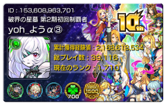
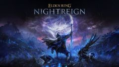
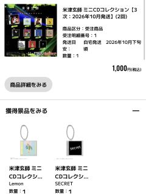

好きなこと
趣味
apex/モンスト/スト６/ナイトレイン/原神/スタレ
apexは約6年ほどやっています、ゲーム性が好きでずっとやっています。
モンストでは同じクエストを周回してランクを1710まで上げて5,6年プレイしています。

スト６は最近始めたゲームで主に舞とマノン(イングリッド来たら使う)を使っています。 ナイトレインでは僕自身フロムソフトウェアのゲームがかなり好きなので深度5まで進めたりエルデンリング本編やダークソウル3などの有名作などもプレイしています。
原神,スターレイルはストーリーが面白くてずっとプレイしています。
音楽
音楽では米津玄師が好きでCDを買ったり、グッズを買ったりするほど好きで毎朝毎晩登下校する際に聴いています。
